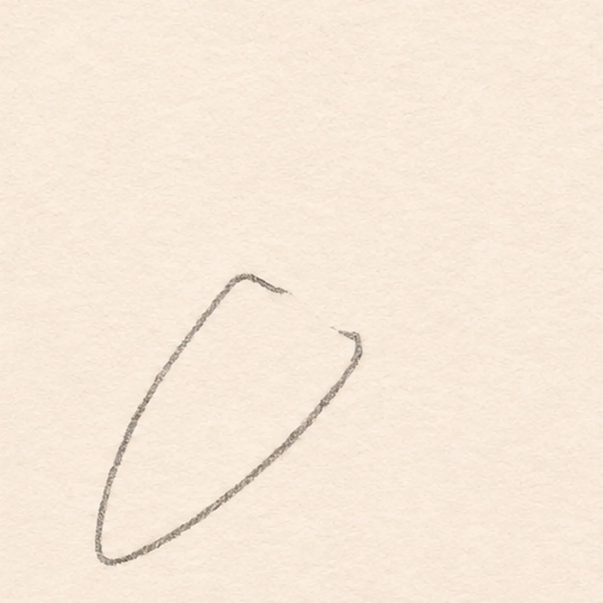
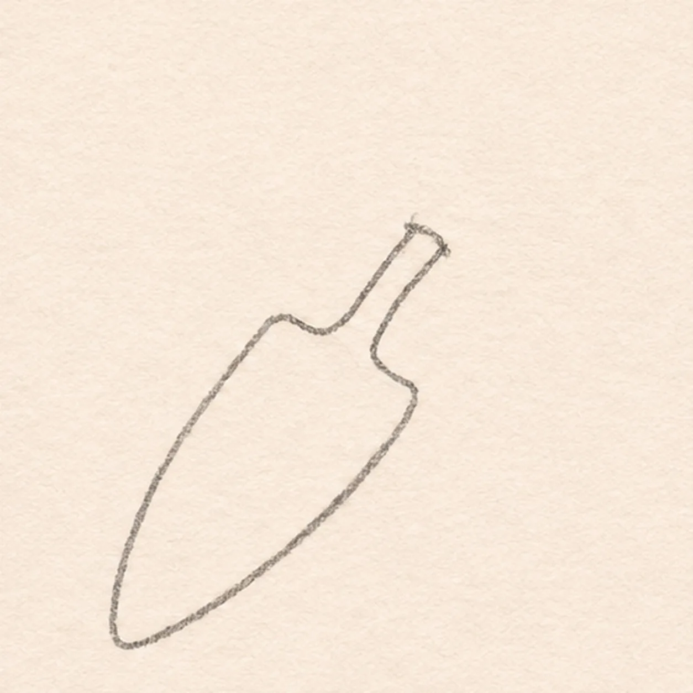
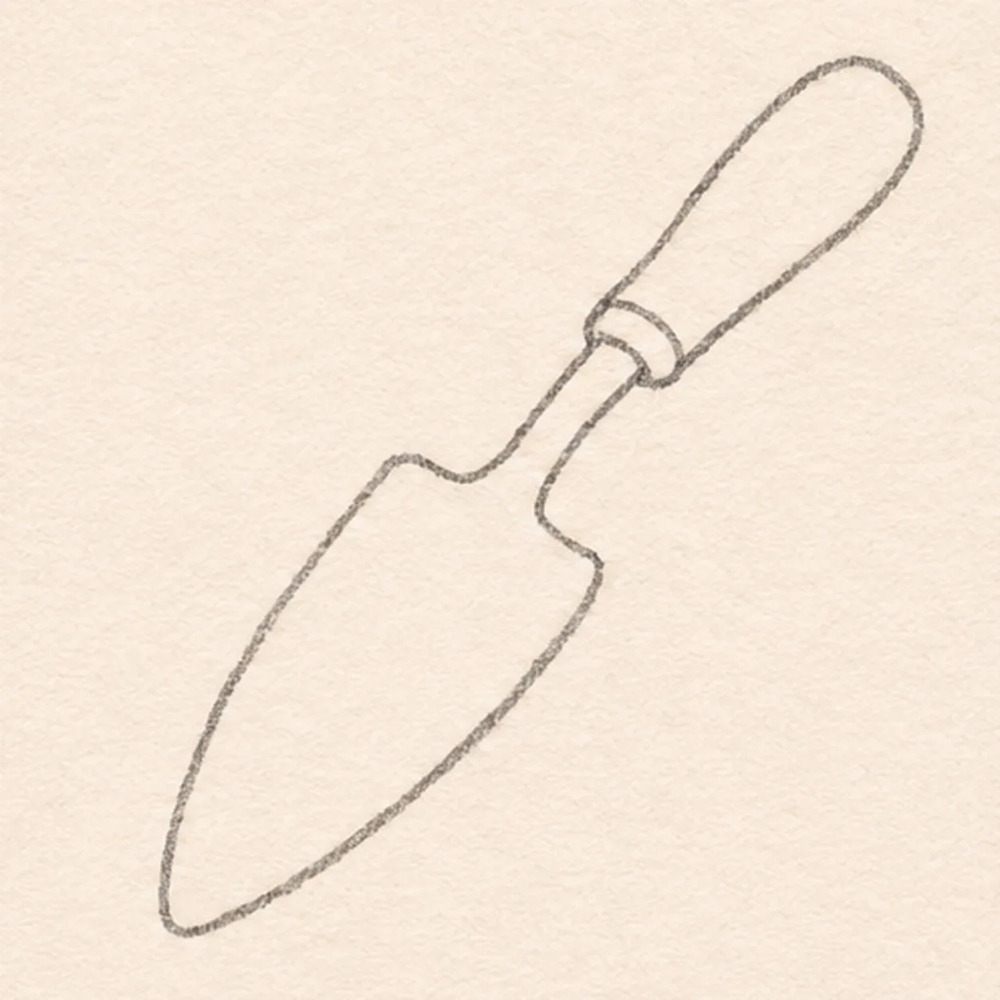
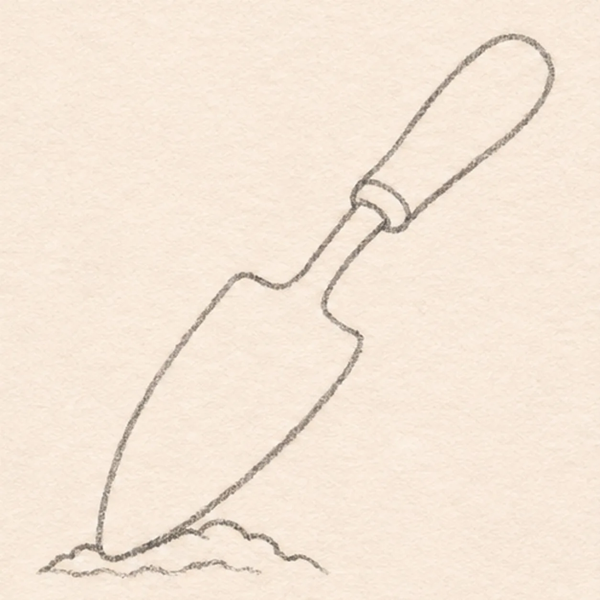
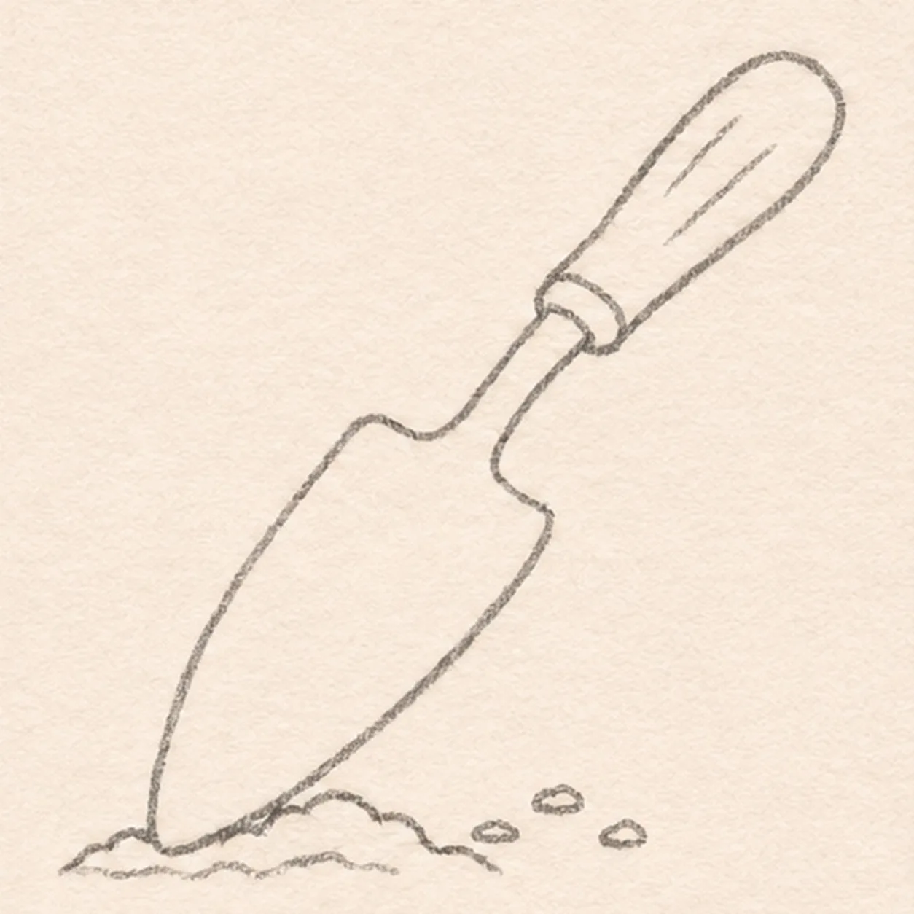

Pencil ready?
Let's draw a garden trowel
Treat this as one small practice round: build the subject lightly, notice the shapes, then darken only the lines that help the finished sketch.
-
01

Shape the scoop
Draw a pointed scoop as two gently curved sides meeting at a rounded tip.
Sketch tip: Leave both upper scoop shoulders open for the neck.
-
02

Attach the neck
From the broad top of the blade, draw a narrow neck that meets both blade shoulders.
Sketch tip: Connect the neck to both scoop shoulders.
-
03

Draw the grip
From the narrow neck, add a small collar and a rounded wooden grip angled up-right; close its top.
Sketch tip: Keep the grip on the same diagonal axis.
-
04

Set the soil
Under the blade tip, sketch a low irregular mound with a clear contact point.
Sketch tip: Let the mound touch only the tip.
-
05

Add small details
Add three small soil crumbs beside the mound and two short grain marks inside the handle.
Sketch tip: Count three crumbs and two grip marks.
-
06
Shade the trowel
Darken the keeper lines, shade one side of the blade and grip, and hatch the soil mound lightly.
Sketch tip: Let the paper tooth show through the shading.